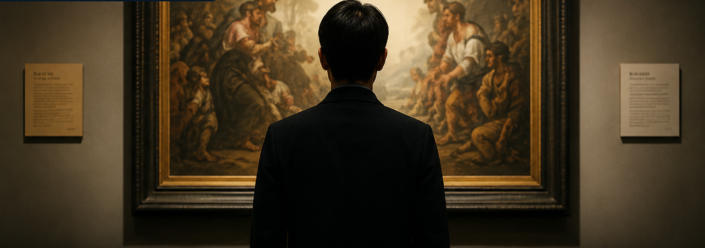

Ongoing Cases

Exhibition Artwork
Plagiarism Controversy
A case alleging that exhibition works by famous artist A were plagiarized from existing works created by emerging artist B.
Medical Malpractice
Death Case
A lawsuit filed by the victim’s family claiming that medical negligence during surgery caused the patient’s death.
Smartphone Defect
Class Action Lawsuit
A class action lawsuit regarding battery defects in a specific smartphone model.
My Activity
Explore Ongoing Cases
Check the status of currently active virtual cases and participate in the discussion.

Exhibition Artwork
Plagiarism Controversy Case
Famous painter A has been accused of plagiarizing another artist’s work and exhibiting it publicly. What is the truth behind this case?
Step-by-Step Progress Status
- 1 Case Created Completed
- 2 Prosecution Vote Completed
- 3 Trial Begins Completed
- 4 Evidence Submission In Progress
- 5 Final Argument Vote Pending
- 6 Final Verdict Pending